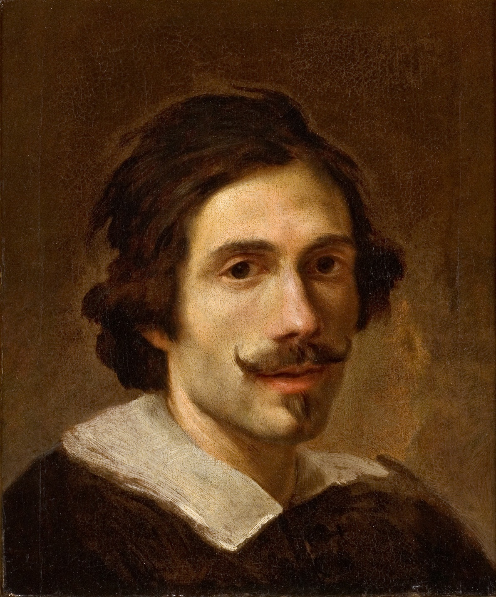
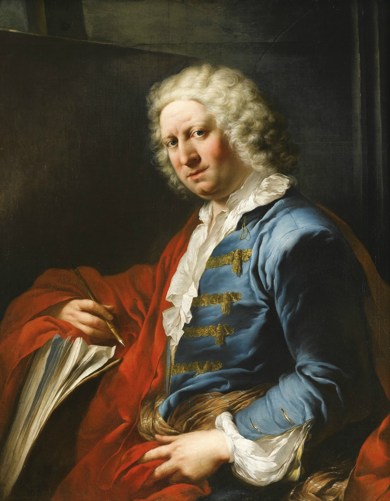

La Fontana de Trevi como la conocemos hoy, tiene varios autores. Gian Lorenzo Bernini corresponde a la primera concepción del proyecto por encargo del Papa Urbano VIII en 1629 con la idea de ubicar la fuente cruzando la calle, también se le atribuyen algunos elementos escultóricos de la fuente. Nicola Salvi, arquitecto y escultor del proyecto ganador fue el artífice del conjunto que se puede admirar en todo su esplendor. Desafortunadamente, Salvi murió en 1751 y no puede ver su obra completa. Giuseppe Pannini toma el relevo y continúa las obras hasta que se inaugura en 1762. Las esculturas que adornan la fuente principal de la escena corresponden a Pietro Bracci, entre ellas la escultura central de Neptuno Filippo della Valle realizó dos estatuas alegóricas colocadas a ambos lados de la fachada del Palacio Poli, símbolo de riqueza y salud.
|

GIAN LORENZO BERNINI |
Arquitecto, dibujante, pintor… Bernini fue un verdadero hombre del renacimiento en el barroco, y rozó la genialidad en todas las artes que cultivó. Pero si en algo destacó este artista básico de la historia del arte universal fue en el terreno de la escultura. De hecho, Bernini no tuvo rival en esa disciplina durante el siglo XVII, aunque desde luego es sonada la rivalidad con Borromini.
|
|

NICOLA SALVI |
Nicola Salvi (1697-1751), fue un arquitecto y escultor Italiano nacido en Roma, contemporáneo de Luigi Vanvitelli, Ferdinando Fuga y Giovanni Battista Piranesi.
|
|
|

GIUSEPPE PANNINI |
Pintor y escenógrafo italiano. En su ciudad natal recibió su primera formación como escenógrafo y pintor de perspectivas fingidas en el entorno de Francesco Galli da Bibiena, Giuseppe Natali o Giovanni Ghisolfi. En 1711 se mudó a Roma, donde entró en el taller de Benedetto Luti, interesado en la pintura figurativa y de historia. Siete años más tarde se le encomendó el proyecto de decoración de Villa Patrizi en Porta Pia, desgraciadamente destruido en 1849. Fue admitido como miembro de la Academia de San Lucas en 1719, y de la Academia de Francia en Roma en 1732, culminando su carrera docente como presidente de la primera entre 1754 y 1755. Durante la década de 1720 trabajó principalmente como pintor de frescos en los palacios romanos. Influido por el paisajismo romano mezcla de realismo y género y de la tradición clasicista del seiscientos, creó, como en los ejemplos del Museo del Prado, amables vistas, vedute ideate, donde sintetizó lo inventado con lo real. Panini buscaba recrear vistas un tanto románticas y arcádicas, con ecos de la pintura de Salvator Rosa y de las vistas arquitectónicas fantasiosas de Giovanni Ghisolfi. En sus paisajes de ruinas clásicas y en los interiores de sus monumentos antiguos acumulaba vestigios arqueológicos en un conjunto pintoresco, visitados y poblados por una multitud de figuras populares contemporáneas. El resultado es menos verosímil que el de otros vedutistas, pero evoca el idilio de los fastos de la Antigüedad clásica. Apreciado por sus comitentes, en su mayoría los turistas que pasaban por Italia, también lo fue por el príncipe de Asturias, el futuro Carlos IV. Al final de su vida tuvo un taller floreciente, formándose en él Hubert Robert y Francesco Panini, hijo del pintor. |